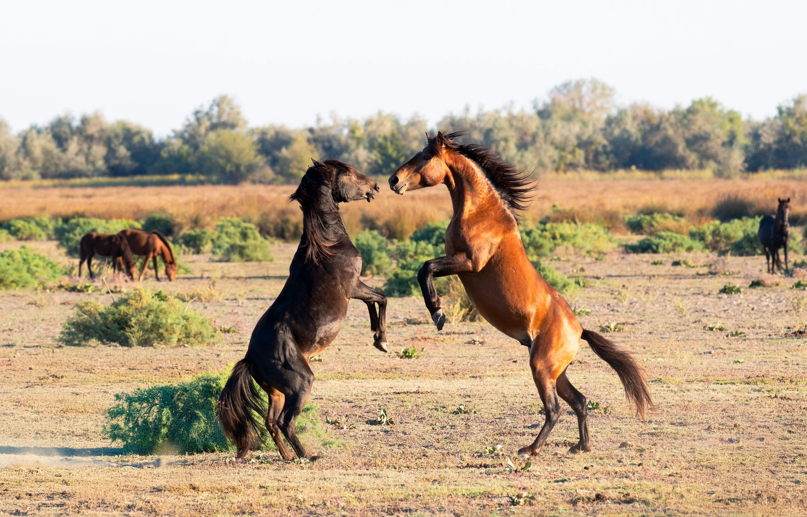
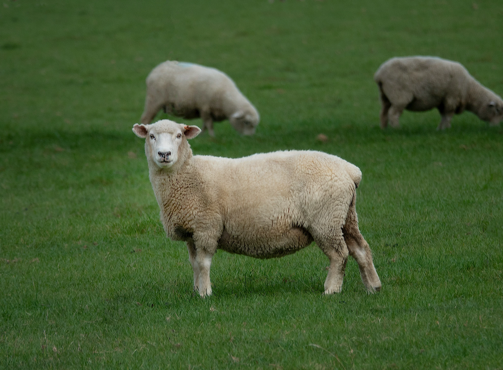
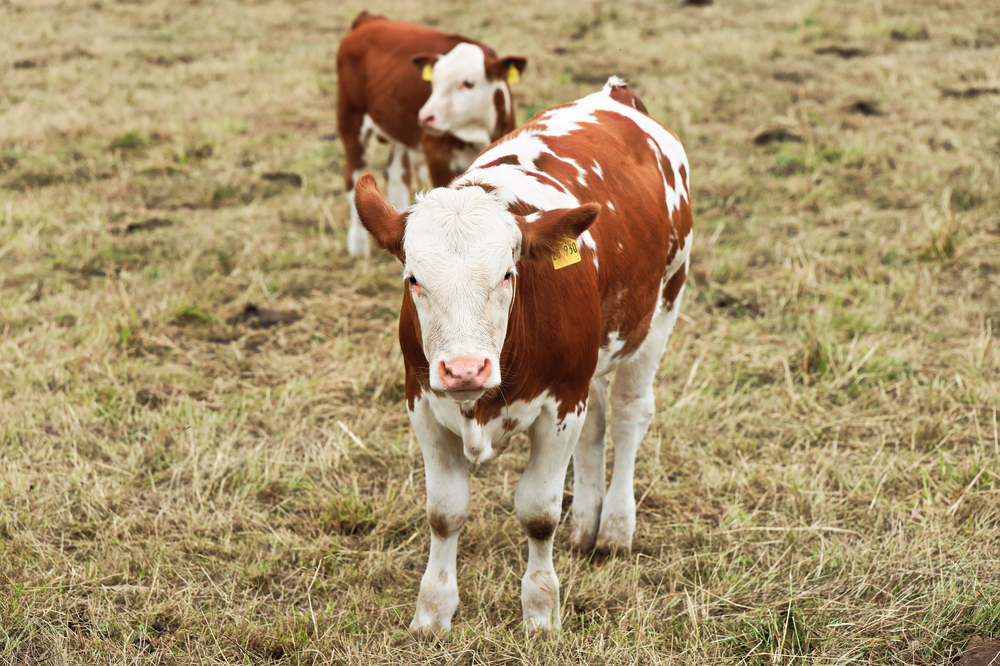

Nutrición balanceada para el máximo rendimiento de tu ganado y mascotas.
Ingredientes Selectos
Calidad desde el origen
Fórmulas Balanceadas
Nutrición comprobada
Venta Mayoreo y Menudeo
Atención a productores
Alimento balanceado diseñado específicamente para las necesidades nutricionales de cada especie.

Conversión alimenticia superior. Fórmulas de alta digestibilidad para un desarrollo rápido y magro.
Ver catálogo completo
Fuerza y vitalidad. Mezclas balanceadas para el máximo desempeño de caballos de trabajo, deporte y reproducción.
Ver catálogo completo
Nutrición balanceada para rebaños sanos. Concentrados ricos en minerales para máximo desarrollo.
Ver catálogo completo
Fórmulas de alto rendimiento para producción lechera, engorda y rápido desarrollo de becerros.
Ver catálogo completoDescubre la fórmula exacta para maximizar el rendimiento y la salud de tus animales. Realiza nuestro diagnóstico rápido y obtén una recomendación experta en 1 minuto.
Somos una fábrica comprometida con el bienestar animal. Seleccionamos los mejores granos y proteínas para crear alimentos que garantizan la salud y el rendimiento de tus animales.
Tecnología de máxima absorción digestiva
"La calidad del grano y la fórmula no tienen comparación en la región. Desde que cambiamos al iniciador de AbaTez, los lechones ganan peso mucho más rápido."
Productor Porcino
"Excelente rendimiento en los corrales de engorda. La conversión alimenticia es muy superior a otras marcas comerciales que usábamos antes."
Ganadero Bovino
"El servicio al cliente es de primera y el alimento siempre llega fresco. Mis caballos tienen una energía increíble y un pelaje envidiable."
Criador Equino
Sí, contamos con rutas logísticas programadas para abastecer de manera directa a ranchos, granjas y distribuidores en Teziutlán, Xiutetelco y toda la zona perimetral del estado de Puebla y Veracruz. Coordinamos las entregas para garantizar que el alimento llegue fresco.
Ofrecemos precios altamente competitivos desde la compra de un solo bulto en planta. Sin embargo, para activar tarifas especiales de mayoreo o distribución por tonelada, nuestro equipo comercial puede estructurar una cotización personalizada de acuerdo con el volumen de tu consumo regular.
Por supuesto. Además de nuestras líneas estándar de alto rendimiento, nuestro departamento de nutrición animal está capacitado para analizar las necesidades de tu granja y diseñar o maquilar mezclas personalizadas que resuelvan deficiencias específicas en tus fases de producción.